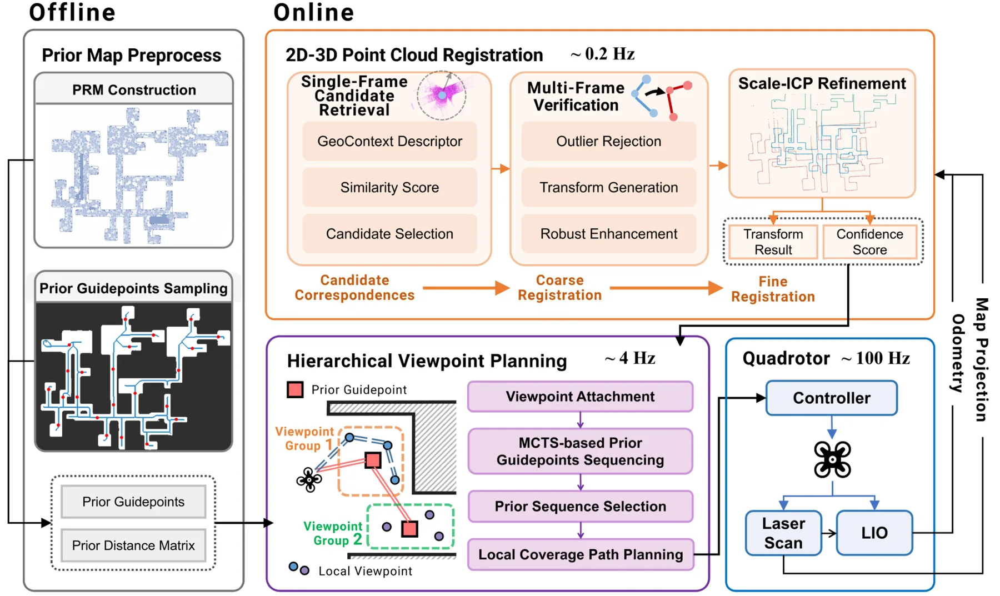
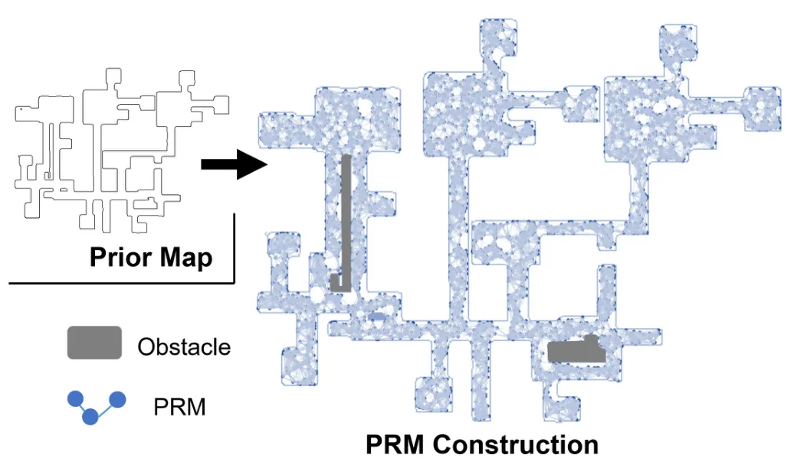
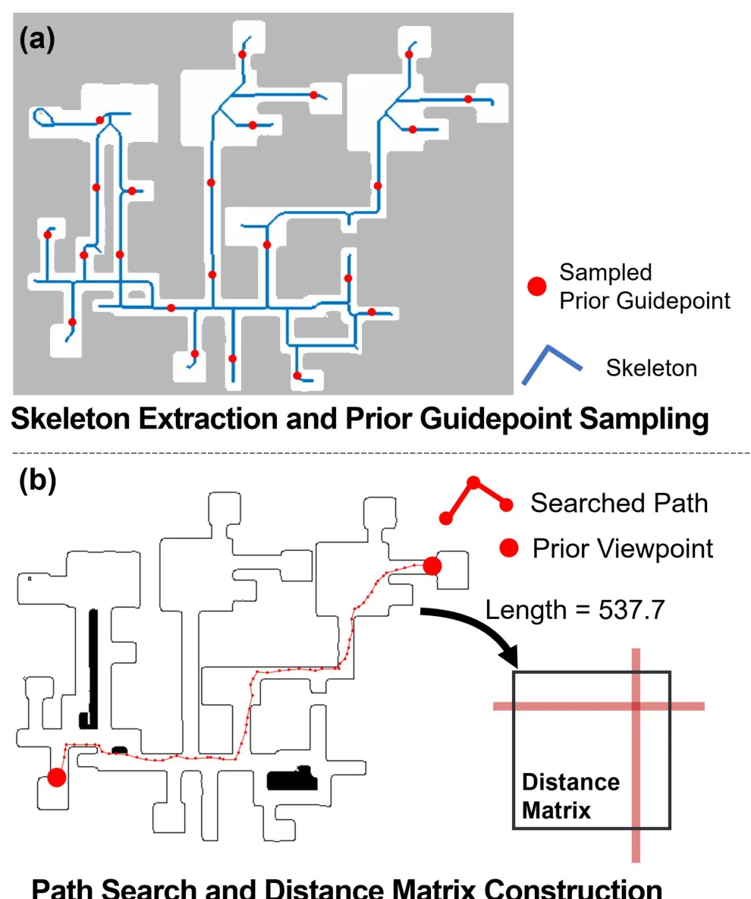
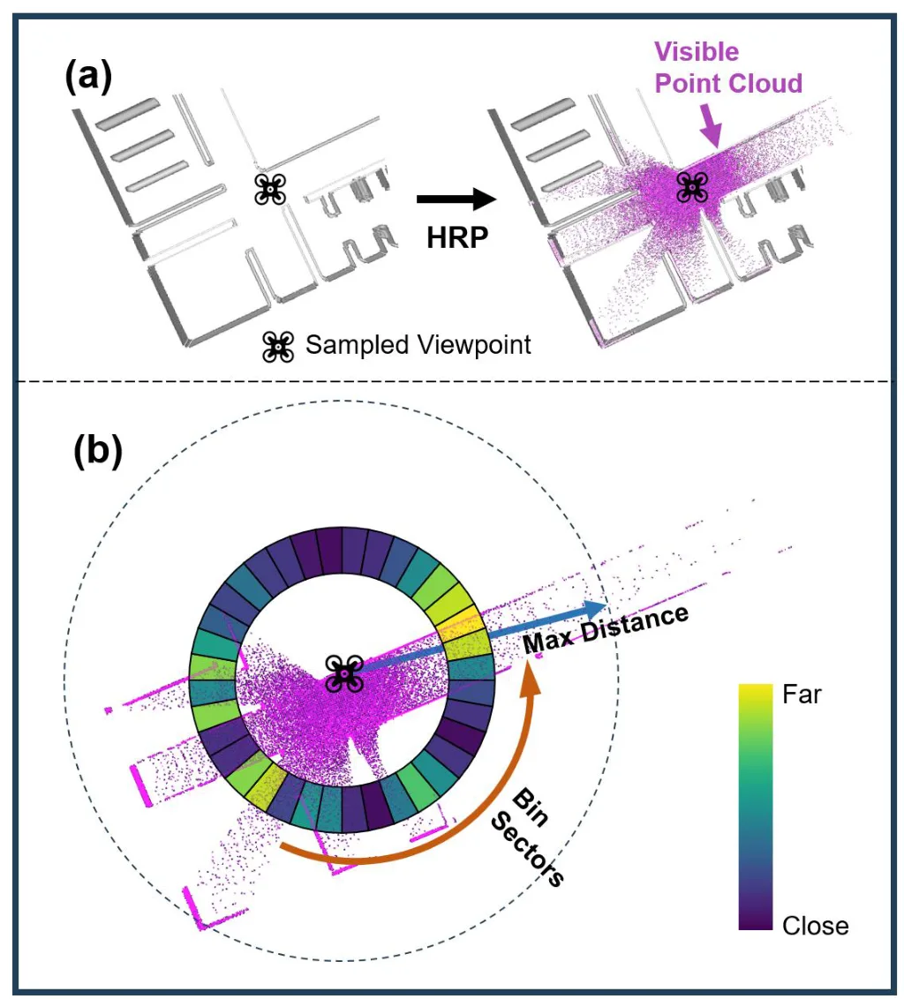
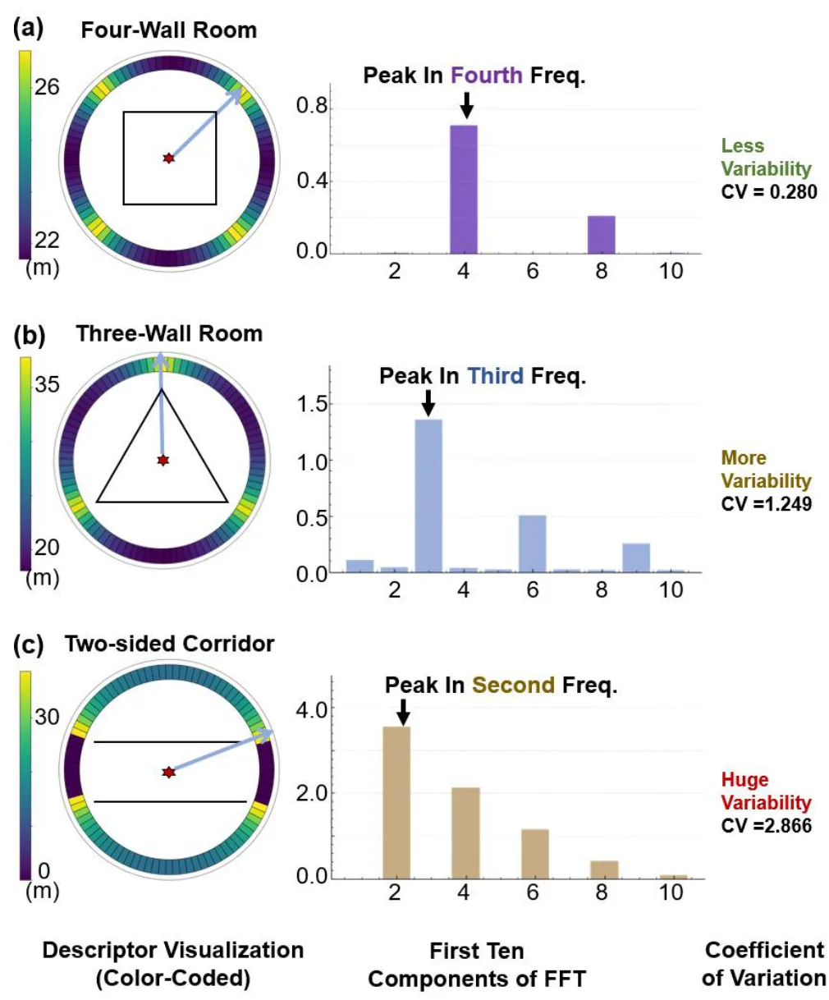
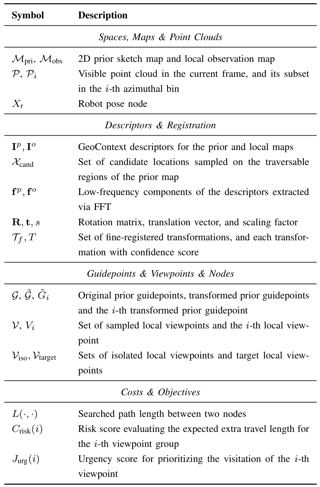
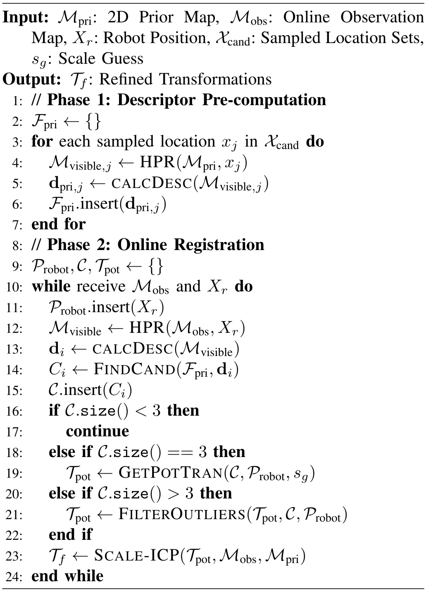

Explore From Sketch：利用先验地图加速大尺度环境 UAV 探索Explore From Sketch: Accelerating UAV Exploration in Large-scale Environments with Prior Maps
最贴近 SLAM/规划闭环，包含 2D-3D 配准、Scale-ICP、多假设不确定性和 UAV LiDAR 探索；采集分低但方向价值高。
一句话工作总结
该框架把粗糙 2D 先验地图与 LiDAR 观测做 2D-3D 配准，并在多假设不确定性下规划 UAV 探索路径，显著提升探索效率。
摘要
大尺度、拓扑复杂环境中的 UAV 自主探索常因调度次优和绕行导致效率低。施工图等先验地图虽然通常不精确、稀疏、未对齐甚至存在缺陷，但可提供全局结构引导。本文提出一个利用稀疏、未对齐且可能不一致的 2D 先验地图进行 LiDAR-UAV 探索的框架。首先，方法构建稳健 2D-3D 点云配准管线：用 GeoContext 描述子做单帧候选检索，用多帧验证进行带离群剔除的粗变换估计，并用 Scale-ICP refinement；该模块能处理地图差异，并在几何歧义下输出多个假设。随后，作者在定位不确定性下设计层次化视点规划：把局部视点附着到 prior guidepoints，用 MCTS 在每个配准假设下确定访问序列，再用 confidence-weighted travel risk 选择先验序列，并通过固定终点 TSP 生成高效局部覆盖路径。benchmark 中探索效率最高提升 34.2%，飞行距离减少 37.9%，仿真与实地实验验证了对先验地图不完整和变形的鲁棒性。
Autonomous exploration with UAVs in large-scale, topologically complex environments often suffers from low efficiency due to suboptimal scheduling and detours. Prior maps (e.g., construction drawings), although usually imprecise and flawed, are readily available in many scenarios and have the potential to provide global structural guidance. This paper presents a novel exploration framework that leverages sparse, unaligned, and even discrepant 2D prior maps for LiDAR-based UAV exploration. First, a robust 2D-3D point cloud registration pipeline is proposed to align LiDAR observations with prior maps. The registration pipeline combines a GeoContext descriptor for single-frame candidate retrieval, a multi-frame verification mechanism for coarse transformation estimation with outlier rejection, and a Scale-ICP algorithm for refinement. The registration module can handle map discrepancies and provide multiple hypotheses when geometric ambiguities arise. To effectively utilize the registration results for exploration planning, we further develop a hierarchical viewpoint planning strategy under localization uncertainties. The hierarchical strategy first spatially attaches local viewpoints to prior guidepoints and adopts a Monte Carlo Tree Search solver to determine their traversal sequence under each registration hypothesis. To mitigate registration uncertainty, a risk-aware selector evaluates prior sequences using confidence-weighted travel risk, and a fixed-endpoint traveling salesman problem is formulated to generate an efficient local coverage path under the selected prior guidance. Benchmark evaluations reveal up to 34.2% improvement in exploration efficiency and 37.9% reduction in flight distance compared to state-of-the-art methods, while extensive simulations and field experiments further demonstrate robustness to prior map incompleteness and deformations.
中文解读摘录
- 作者：Siyu Zhou, Zhongliang Jiang；类别：cs.CV；发布日期：2026-06-11；采集 score=9
- 核心问题：partial-to-full 点云配准在重叠率变化、点密度波动和噪声存在时容易失稳；已有 Transformer 点云方法多偏全局上下文聚合，容易忽略建立精确对应所需的局部几何。
- 方法亮点：提出 GAPR-Net，采用 coarse-to-fine 框架，把卷积和 Transformer 模块结合起来，并通过 cross-attention 在局部/全局层面融合 partial 与 full 点云信息；核心是一个变换不变的 point-wise geometric feature，用相邻点相对几何描述单点局部结构。
- 结果信号：在胫骨、股骨、骨盆、胸椎软骨四类几何差异明显的骨骼数据上，registration recall 达到 94.2%，RMSE 为 1.992 mm，旋转和平移的 $R^2$ 分别为 0.908 和 0.974。
- 关注价值：直接命中点云配准，尤其适合关注低重叠、局部几何描述子和 partial observation 的研究者。局限是场景偏手术导航，代码需双盲评审后开放；后续应确认它在室外 LiDAR、稀疏/非均匀扫描和大尺度地图上的泛化性。
图表/页面预览

{kind=link}

{kind=link}

{kind=link}

{kind=link}

{kind=link}

{kind=link}

{kind=link}
